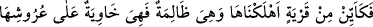
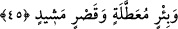
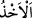

Ey Muhammed! “Eğer onlar (inkârcılar) seni yalanlıyorlarsa,” eğer kavminin seni
yalanlamasına üzülüyorsan, bil ki bu hususta tek değilsin. Maksad kendisini
yalanlamaları yüzünden meydana gelmesi beklenen hüzün sebebiyle Hz. Peygamber
(a.s.)’ı tesellî etmektir. “onlardan önce” onların yalanlamasından önce “Nuh’un
kavmi,” Nûh (a.s.)’ı “Âd,” Hûd (a.s.)’ı “Semûd,” Sâlih (a.s.)’ı “İbrahim’in kavmi,”
İbrâhim (a.s.)’ı “Lût’un kavmi” Lût (a.s.)’ı “ve Medyen halkı da” Şuayb (a.s.)’ı
“yalanladılar.” Medyen, İbrahim (a.s.)’ın oğlu idi. Sonra Şuayb (a.s.)’ın memleketine
alem oldu.
“Mûsâ da yalanlanmıştı.” Onu Kıptîler yalanladı. Helâk oluncaya kadar yalanlamada
ısrar ettiler. İsrâiloğulları’na gelince, onlar her ne kadar “Biz Allah’ı açıkça
görmedikçe asla sana inanmayız.” (el-Bakara, 2/55) gibi sözler söyleseler de
inâdlarını sürdürmediler. Kendilerine yeni yeni mûcizeler gösterildikçe onlar da
îmanlarını yenilediler. Bu sözün böyle anlaşılması gerekir. Bu ifâde, Mûsâ (a.s.)’ın
getirdiği mûcizeler çok açık olduğu halde onu yalanlamalarının son derece çirkin
olduğunu bildirmektedir.
“İşte ben o kâfirlere süre tanıdım,” belli olan ecellerine kadar onlara mühlet verdim
“sonra onları yakaladım. Yani, yalanlayan fırkalardan her fırkayı, tanınan süre ve
mühlet müddeti bittikten sonra tûfan, soğuk rüzgâr ve korkunç ses azâbı, sivrisinek
ordusu, yerin dibine geçirme, taş, gölge gününün azâbı ve Kızıldeniz’de boğulmak gibi
azablarla yakaladım.
Râğıb der ki: “ bir şeyi koymak ve onu elde etmektir. Bu, bazen alıp yakalamakla
olur. Nitekim âyette “(Yusuf): “Eşyamızı yükünde bulduğumuzdan başkasını
almaktan, Allah’a sığınırız.” dedi.” (Yusuf, 12/79) Bazen de zorla alıp yakalamak
anlamında kullanılır. Tefsir edilmekte olan âyet buna örnektir.
Nimeti mihnete, hayatı helâke, mâmurluğu, haraplığa çevirmek sûretiyle “nasıl oldu
benim onları reddim (cezalandırmam)!” Yâni benim onları reddim, korku ve dehşetin
son derecesinde oldu. Buradaki sorunun mânâsı, konuyu anlatmaktır. Âyetten hâsıl olan
şudur: “Bu peygamberlere vaad ettiğim yardımı verdim ve onlar rahata erdiler. Şu halde
sen de sana düşmanlık edenler helâk olana kadar sabret, sen de rahata erersin.” Bu
ifâdede Hz. Peygamber (s.a.)’i tesellî vardır.
45. Nitekim birçok memleket vardı ki, o memleket (halkı) zulmetmekte iken, biz
onları helâk ettik. Şimdi o ülkelerde duvarlar, (çökmüş) tavanların üzerine
yıkılmıştır. Nice kullanılmaz hale gelmiş kuyular ve (ıssız kalmış) ulu saraylar
vardır.